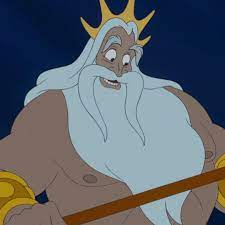
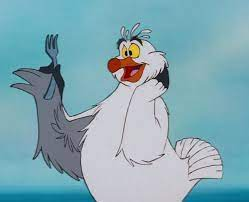
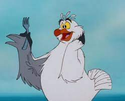

Atlantikában töltöm a napjaim,  lányaként. Sajnos az engedelmesség nem tartozik a legfőbb erényeim közé, akarva-akaratlanul is sokszor török borsot a királyi udvar tagjainak orra alá. Egyedül talán csak az énekhangommal okozok büszkeséget apámnak, aminek egész Atlantikában nincs párja.
Gyerekkorom óta vonz az emberek világa, és ha alkalmam nyílik rá, a hajók közelébe merészkedve fürkészem őket. Egy titkos barlangba gyűjtöm az emberi csecsebecséket, bár sokszor ötletem sincs, hogy mire valók.
Legjobb barátom  , akire félénksége ellenére mindig lehet számítani, valamint , aki sokat segít abban, hogy minél többet megtudjak az emberek világáról.
, akire félénksége ellenére mindig lehet számítani, valamint , aki sokat segít abban, hogy minél többet megtudjak az emberek világáról.